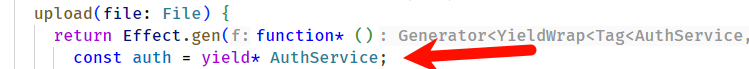
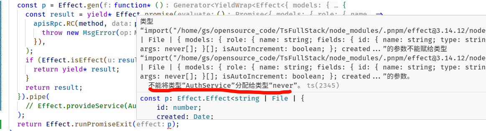

首页
基于Effect的后端api设计
最近在开发
TsFullStack
,其中的后端api深度集成了Effect。
为什么是 effect-ts
例如下面这个上传接口，他内部是依赖了 authService（用户信息），如果我们通过参数来传递 auth 的话，在嵌套调用的情况下会非常繁琐，尤其是后期新增一个依赖，那么就要全链路改动。

为了避免上面这个问题一般采用线程变量（在node中可以使用
CLS
）或者 InversifyJS 这样的方案，又或者在 vue 中也有 provied inject 这样的方案。
但他们有一个最大的缺点就是在实际运行程序（或者通读代码）之前没法知道一段程序究竟依赖了什么，而Effect通过巧妙的ts type解决了这个问题，例如下面是
TsFullStack
中运行包含上面 upload 相关接口的程序，我手动注释掉了provide authService 的代码，可以看到 ts 就会提示缺少了 AuthService。

这就实现了在实际运行程序之前知道一段程序究竟依赖了什么
那么什么场景非常需要这个特性呢？
1.
编写严谨不易出错的程序
2.
编写单元测试，没有这个特性的话编写单元测试就需要开发者反复阅读代码确定一个片段依赖了什么。